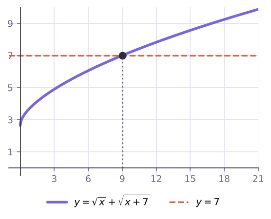

иррациональных уравнений и систем
x² − 3x + √(x² − 3x + 5) = 7: t² + t − 12 = 0, t = 3 ⇒ x = 4, −1
√x + √(x + 7) возрастает ⇒ не больше одного корня.
x = 9: 3 + 4 = 7

С ограничениями на новую переменную